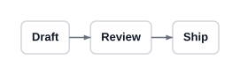
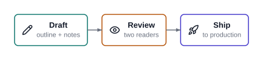
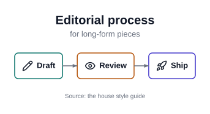
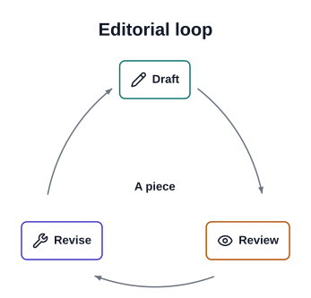
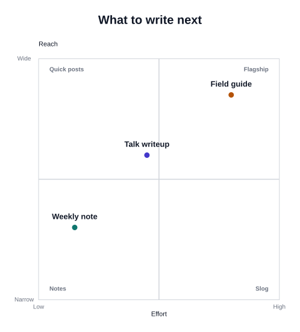
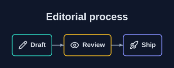
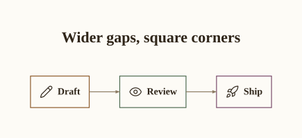

import prism
spec = """
type: flow
steps:
- label: Draft
- label: Review
- label: Ship
"""
prism.diagram(spec)
From nothing to a themed diagram, one step at a time
This page is meant to be followed along with. Every diagram below is rendered by prism while this page is built — nothing here is a screenshot, and if any step stopped working the site would fail to build.
The import name is prism; the distribution is prism-svg because prism was already taken on PyPI. Check it worked:
You should see ten names. If you have uv, uvx --from prism-svg prism archetypes works without installing anything.
A prism spec is YAML. It needs exactly one thing: a type, naming the archetype. Here is the smallest useful diagram there is.

That is the whole loop: write YAML, get SVG. You never positioned anything — prism chose the box sizes, the spacing, the arrow geometry and the colours.
Save that YAML to first.yaml and you can do the same from a terminal:
Every archetype in prism consumes the same node shape. Learn it once and it works in all ten. The useful fields are sublabel, icon and accent.

accent is an index into the theme’s colour ramp, not a colour. That indirection is the point: the theme owns the palette, so the same spec restyles cleanly. There are 1756 icons available (prism icons), all from Lucide.
These live at the top level of the spec, alongside type, because they belong to the diagram rather than to any node.

That inline {label: Draft, icon: pencil} form is ordinary YAML — use whichever style you find more readable.
Most archetypes take a small number of structural options. flow takes direction.
This is the one judgement prism asks of you. Not what is this about, but what shape is the idea. The same three-stage editorial process, told as a loop rather than a line, wants cycle:

And the same content as a judgement about two independent dimensions wants quadrant, where items carry coordinates in 0..1:
spec = """
type: quadrant
title: What to write next
axes:
x: {label: Effort, low: Low, high: High}
y: {label: Reach, low: Narrow, high: Wide}
quadrant_labels: [Quick posts, Flagship, Notes, Slog]
items:
- {label: Weekly note, x: 0.15, y: 0.3}
- {label: Field guide, x: 0.8, y: 0.85}
- {label: Talk writeup, x: 0.45, y: 0.6}
"""
prism.diagram(spec)
The catalog shows all ten with the spec that produced each.
hierarchy is the only archetype whose data nests, through children. That is data recursion, not template composition — you still cannot put one archetype inside another.
Add one line. Nothing else about the spec changes.

Four themes ship: default, dark, paper and mono. paper is the one to reach for in print — serif typography, warm surface, hairline strokes:
You rarely need a whole new theme to change one thing. tokens: overrides individual theme values by dotted path.

A mistyped path fails loudly rather than being ignored — try geometry.radiuss and prism will tell you what it expected.
For a whole document set you want a theme file of your own. Scaffold one:
That writes house.yaml here, copied from the default theme and already carrying its new name. Start from whichever bundled theme is closest:
The file opens with a comment explaining the two rules you have to respect, so you do not have to remember them. Then point any spec at it:
Edit the tokens and every diagram that references the file restyles at once.
The two rules, since they surprise people: typography.family must be grotesque, serif or mono, and typography.weight values must be 400 or 700. Those are exactly the fonts and weights whose metrics prism has vendored. Anything else would mean measuring text against a font your reader does not have, and labels would overflow their boxes. prism new-theme validates the file it writes, so a bad edit fails when you next render rather than producing a quietly broken picture.
prism’s errors are written to be acted on. Each names the bad value and points at the valid neighbours.
--------------------------------------------------------------------------- UnknownIcon Traceback (most recent call last) Cell In[11], line 1 ----> 1 prism.render_str(""" 2 type: flow 3 steps: 4 - {label: Draft, icon: pencl} File ~/work/prism/prism/prism/__init__.py:89, in render_str(source) 87 saved, _TGroup.stack = _TGroup.stack, [] 88 try: ---> 89 canvas = frame(archetype.build(spec, ctx), envelope, ctx) 90 svg = canvas._repr_svg_() 91 finally: File ~/work/prism/prism/prism/archetypes/flow/build.py:25, in FlowArchetype.build(self, spec, ctx) 23 def build(self, spec: FlowSpec, ctx: RenderContext) -> Group: 24 theme = ctx.theme ---> 25 boxes = [build_node_box(step, ctx) for step in spec.steps] 27 if spec.direction == "right": 28 spine = RowLayout(boxes, align="middle", gap=theme.geometry.gap) File ~/work/prism/prism/prism/nodebox.py:109, in build_node_box(node, ctx, max_width) 106 body: Group = ColumnLayout(stack, align="middle", gap=theme.geometry.gap / 6) 108 if node.icon: --> 109 glyph = build_icon( 110 node.icon, 111 size=theme.size("label") * 1.4, 112 color=ink, 113 stroke=theme.geometry.stroke, 114 ) 115 body = RowLayout([glyph, body], align="middle", gap=theme.geometry.pad / 2) 117 badge = build_badge(node, ctx) File ~/work/prism/prism/prism/icons.py:68, in build_icon(name, size, color, stroke) 66 def build_icon(name: str, size: float, color: Color, stroke: float) -> IconShape: 67 """Return the named icon as a shape, scaled to `size` and centred on origin.""" ---> 68 return IconShape(name, size, color, stroke) File ~/work/prism/prism/prism/icons.py:44, in IconShape.__init__(self, name, size, color, stroke) 42 data = _icons() 43 if name not in data: ---> 44 raise UnknownIcon(name, data) 45 super().__init__(fill=Colors.Transparent, stroke=color, width=stroke) 46 self.name = name UnknownIcon: unknown icon 'pencl' — did you mean: pencil, pen, pencil-off?
The same holds for unknown archetypes, unknown theme tokens, and dangling references such as a matrix cell naming a row that does not exist.
Everything above is a real Quarto page. The pattern is:
prism.diagram() accepts a path or a spec string and returns an object that knows how to display itself, so Quarto embeds the SVG directly — no intermediate file and no rasterisation. See In Quarto for PDF output and batch rendering.
And when you want a field prism does not have, prism schema <archetype> is the authoritative answer on what a given archetype accepts.